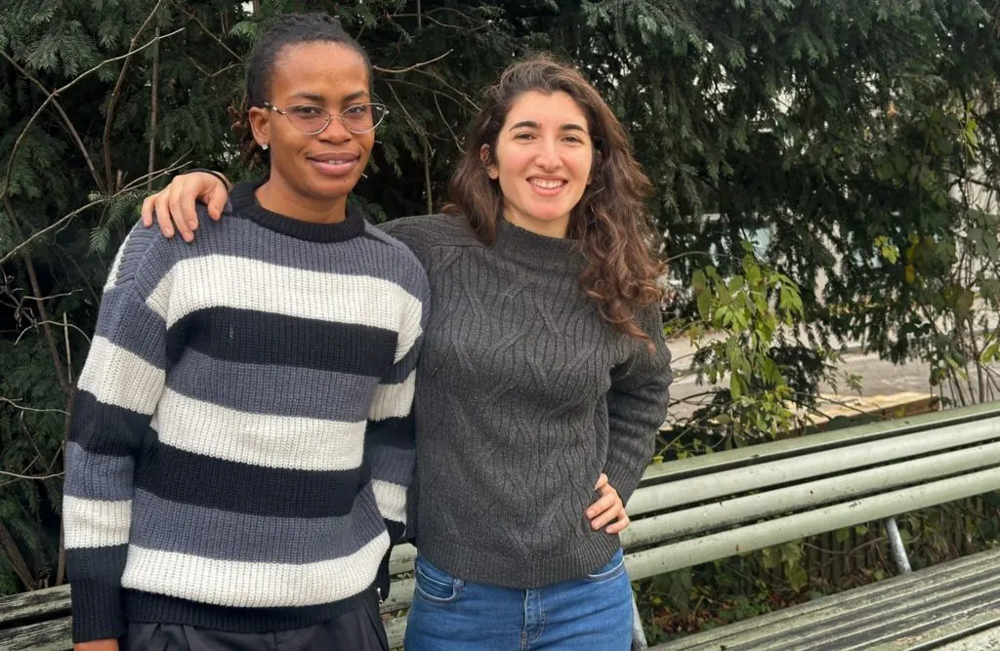

„Wir waren beide wie Fische auf dem Trockenen in einem neuen Land“
“We were both fishes out of water in a new country”
„Wir waren beide wie Fische auf dem Trockenen in einem neuen Land“
„Six Degrees of Separation“ heisst eine Theorie, die besagt, dass alle Menschen nur sechs oder weniger soziale Verbindungen voneinander entfernt sind. Wie wahrscheinlich ist es jedoch, dass eine Gartenbau-Absolventin aus Italien und eine fussballbegeisterte Nigerianerin, die in der Ukraine Computerinformationstechnologie studiert, in der Schweiz eine blühende Freundschaft schliessen würden?

Dank des Studienunterstützungsprogramms SEET (Support Education, Empower Together) entwickelte sich das obige Szenario sehr schnell, als Sofia Felicioni im Frühjahr 2024 als Mentorin für Akeju Abidemi Tolulope ausgewählt wurde.
Sofia suchte nach Abschluss ihres Studiums und ihrer Forschung in Gewächshausgartenbau an der Universität Wageningen nach einer neuen Herausforderung. „Ich habe eine Leidenschaft für Biologie und die Umwelt und bin auf den Pflanzenanbau spezialisiert. Nach meinem Abschluss war ich arbeitslos, also beschloss ich, während ich nach einem Job suchte, einen Teil meiner Freizeit zu nutzen, um Menschen zu helfen“, erklärte Sofia. „Ich sah einen Beitrag auf LinkedIn, dass SEET Leute mit Erfahrung im Schweizer Bildungssystem rekrutierte, um neu im Land angekommene Geflüchtete zu unterstützen. Ich hatte diesen ‚Integrationsprozess‘ selbst durchlaufen, nachdem ich erst vor einem Jahr in Zürich angekommen war, also bewarb ich mich. Nach einem Vorstellungsgespräch wurde mir mitgeteilt, dass ich als Mentorin angenommen wurde. Innerhalb eines Monats traf ich Akeju zum ersten Mal.“
Nach der Eskalation des Konflikts mit Russland änderte sich Akeju‘s Leben in der Ukraine schnell. Von einem friedlichen Leben, in dem sie ihre akademischen Ambitionen verfolgte, fand sie sich in Zürich wieder. Ein weiteres neues Land, in dem sie niemanden kannte, aber wusste, wonach sie suchte. „Ich wusste wirklich nicht, wo ich Unterstützung finden könnte, also begann ich buchstäblich einfach, nach Organisationen zu googeln, die Geflüchteten in der Schweiz helfen könnten“, sagte Akeju. „Ich stiess auf die Website von SEET, las einige der Erfahrungsberichte anderer Menschen, die der Verein unterstützt hatte, und bewarb mich online. Von dort aus wurde ich zu einem Online-Vorstellungsgespräch eingeladen und erfuhr anschliessend, dass ich als Mentee ins Programm aufgenommen wurde.“
Das Programm von SEET bietet jedem Geflüchteten (Mentee) nicht nur die Unterstützung eines Mentors und eines „Buddys“, der ein freiwilliges Mitglied des Vereins ist. Es gibt auch eine Kombination aus persönlichen und Online-Veranstaltungen, Vernetzungsmöglichkeiten und die Möglichkeit, Fördermittel zu beantragen, sei es zur Unterstützung der Kosten eines Studiengangs oder als Beitrag z. B. für einen Laptop.
„Als ich in Zürich ankam, brauchte ich wirklich etwas Anleitung und ein Unterstützungsnetzwerk“, fuhr Akeju fort. „Ich wusste nicht, wie das Bildungssystem oder der Arbeitsmarkt in Zürich funktioniert. Sie können sich vorstellen, wie schwierig das am Anfang war. Nachdem ich Sofia kennengelernt hatte, begannen wir, uns regelmässig in einer Bibliothek zu treffen. Sie half mir bei meinem Lebenslauf, prüfte meine Bewerbungen und wurde mehr als nur eine Mentorin, sie wurde schnell zu einer Freundin. Zusammen mit unserem Buddy gründeten wir eine WhatsApp-Gruppe, treffen uns regelmässig und ich weiss, dass sie immer für mich da sind, um mir Ratschläge zu geben oder mich aufzumuntern.“
Die Bewerbungsfrist für neue Mentees und Mentoren, die 2025 am Programm teilnehmen möchten, beginnt am 1. Januar und endet am 15. Februar. Einzelheiten werden auf der SEET-Website veröffentlicht.
„Ich würde die Erfahrung auf jeden Fall empfehlen“, sagte Sofia mit einem breiten Lächeln. „Vielleicht war es auch ein bisschen Glück, aber ich habe wirklich gut mit Akeju zusammengepasst. Wir haben sehr ähnliche Persönlichkeiten und waren beide ‚Fische auf dem Trockenen‘, da wir beide neu in einer neuen Stadt waren. Wir haben uns sehr schnell verstanden, und das hat die Arbeit, die wir zusammen gemacht haben, angenehm und unterhaltsam gemacht. Neben der Möglichkeit, Akeju zu helfen, hat uns unsere Partnerschaft und Freundschaft auch viel über die Erfahrungen von Geflüchteten beigebracht, insbesondere über die unterschiedlichen Vorschriften.“
In den letzten Monaten hat Akeju nach Abschluss eines Deutschkurses ein Hochschulstudium mit Schwerpunkt Lagerlogistik begonnen.
„Meine grösste Motivation ist immer, ein besserer Mensch zu sein und so viele meiner Ziele wie möglich zu erreichen. Ich glaube wirklich, dass nichts unmöglich ist“, sagte Akeju mit einem Glitzern in den Augen. „Ich bin immer daran interessiert, weiter zu lernen und Kontakte zu knüpfen, und ich bin der Meinung, dass kein neues Wissen verloren ist. An alle Geflüchtete in der Schweiz, die erwägen, sich für das SEET-Programm zu bewerben: Tut es!“
Six degrees of separation is the idea that all people are six or fewer social connections away from each other. How likely is it however that a Horticulture graduate from Italy and a football-loving Nigerian studying Computer Information Technology in Ukraine would forge a blossoming friendship in Switzerland?
Thanks to SEET’s (Support Education, Empower Together) study support programme, the above scenario evolved very quickly when Sofia Felicioni was selected as a mentor to Akeju Abidemi Tolulope in the spring of 2024.
Sofia was looking for a new challenge after completing her studies and research in Greenhouse Horticulture from Wageningen University. “I have a passion for Biology and the environment and specialise in growing plants. After graduating I was unemployed, so whilst I searched for a job, I decided I wanted to utilise some of my free time to help people” Sofia explained. “I saw a post on LinkedIn that SEET were recruiting people with experience of the Swiss education system to support refugees newly arrived in the country. I had navigated this ‘integration process’ myself after arriving in Zürich only one year ago, so I applied. After conducting an interview, I was informed I had been successful. Within a month, I met Akeju for the first time.”
After the conflict with Russia escalated, Akeju’s life in Ukraine quickly altered. From a peaceful existence furthering her academic ambitions, she found herself in Zürich. Another new country where she knew no-one, but did know what she was looking for. “I really didn’t know where I could find support, so literally just started googling about organisations that might help refugees in Switzerland” said Akeju. “I came across SEET’s website, read some of the testimonies from other people that the association had supported, and applied online. From there I was invited to an online interview, and subsequently learned I was successful.”
SEET’s programme not only provides each refugee (mentee) with the support of a mentor and a ‘buddy’, who is a volunteer member of the association. There are also a combination of in-person and online events, networking opportunities, and the option to apply for funding, whether to support the costs of a study course, or as a contribution e.g. towards a laptop.
“When I arrived in Zürich, what I really needed was some guidance, and a support network” Akeju continued. “I didn’t know how the education system or employment market worked in Zürich. You can imagine how tough that was at the beginning. After being first introduced to Sofia, we started to regularly meet in a library. She helped me with my CV, checked my applications, and more than a mentor, quickly became a friend. Together with our Buddy, we created a WhatsApp group, meet socially, and I know they are always available to give me some advice, or lift my spirits.”
The application period for new mentees and mentors interested in joining the programme in 2025 will open on 1 January until 15 February, with details set to be posted on the SEET-website.
“I would definitely recommend the experience” Sofia said with a broad smile. “There was perhaps a small element of luck, but I was really well matched with Akeju. We have very similar personalities and were both ‘fishes out of water’, as we were both new to a new city. We connected very quickly and that has made the work we’ve done together enjoyable and fun. As well as being able to help Akeju, our partnership and friendship has also taught me a lot about the experiences faced by refugees, especially all the different regulations.”
In recent months, Akeju has started a higher education course focused on Warehouse Logistics, after concluding a German language proficiency course.
“My biggest motivation is always to be a better person and to achieve as many of my goals as possible. I truly believe nothing is impossible” said Akeju with a glint in her eye. “I’m always keen to keep learning, to make new connections, and I believe no new knowledge is a waste. For any refugee in Switzerland considering applying for SEET’s programme, do it!”
„Six Degrees of Separation“ heisst eine Theorie, die besagt, dass alle Menschen nur sechs oder weniger soziale Verbindungen voneinander entfernt sind. Wie wahrscheinlich ist es jedoch, dass eine Gartenbau-Absolventin aus Italien und eine fussballbegeisterte Nigerianerin, die in der Ukraine Computerinformationstechnologie studiert, in der Schweiz eine blühende Freundschaft schliessen würden?
Dank des Studienunterstützungsprogramms SEET (Support Education, Empower Together) entwickelte sich das obige Szenario sehr schnell, als Sofia Felicioni im Frühjahr 2024 als Mentorin für Akeju Abidemi Tolulope ausgewählt wurde.
Sofia suchte nach Abschluss ihres Studiums und ihrer Forschung in Gewächshausgartenbau an der Universität Wageningen nach einer neuen Herausforderung. „Ich habe eine Leidenschaft für Biologie und die Umwelt und bin auf den Pflanzenanbau spezialisiert. Nach meinem Abschluss war ich arbeitslos, also beschloss ich, während ich nach einem Job suchte, einen Teil meiner Freizeit zu nutzen, um Menschen zu helfen“, erklärte Sofia. „Ich sah einen Beitrag auf LinkedIn, dass SEET Leute mit Erfahrung im Schweizer Bildungssystem rekrutierte, um neu im Land angekommene Geflüchtete zu unterstützen. Ich hatte diesen ‚Integrationsprozess‘ selbst durchlaufen, nachdem ich erst vor einem Jahr in Zürich angekommen war, also bewarb ich mich. Nach einem Vorstellungsgespräch wurde mir mitgeteilt, dass ich als Mentorin angenommen wurde. Innerhalb eines Monats traf ich Akeju zum ersten Mal.“
Nach der Eskalation des Konflikts mit Russland änderte sich Akeju‘s Leben in der Ukraine schnell. Von einem friedlichen Leben, in dem sie ihre akademischen Ambitionen verfolgte, fand sie sich in Zürich wieder. Ein weiteres neues Land, in dem sie niemanden kannte, aber wusste, wonach sie suchte. „Ich wusste wirklich nicht, wo ich Unterstützung finden könnte, also begann ich buchstäblich einfach, nach Organisationen zu googeln, die Geflüchteten in der Schweiz helfen könnten“, sagte Akeju. „Ich stiess auf die Website von SEET, las einige der Erfahrungsberichte anderer Menschen, die der Verein unterstützt hatte, und bewarb mich online. Von dort aus wurde ich zu einem Online-Vorstellungsgespräch eingeladen und erfuhr anschliessend, dass ich als Mentee ins Programm aufgenommen wurde.“
Das Programm von SEET bietet jedem Geflüchteten (Mentee) nicht nur die Unterstützung eines Mentors und eines „Buddys“, der ein freiwilliges Mitglied des Vereins ist. Es gibt auch eine Kombination aus persönlichen und Online-Veranstaltungen, Vernetzungsmöglichkeiten und die Möglichkeit, Fördermittel zu beantragen, sei es zur Unterstützung der Kosten eines Studiengangs oder als Beitrag z. B. für einen Laptop.
„Als ich in Zürich ankam, brauchte ich wirklich etwas Anleitung und ein Unterstützungsnetzwerk“, fuhr Akeju fort. „Ich wusste nicht, wie das Bildungssystem oder der Arbeitsmarkt in Zürich funktioniert. Sie können sich vorstellen, wie schwierig das am Anfang war. Nachdem ich Sofia kennengelernt hatte, begannen wir, uns regelmässig in einer Bibliothek zu treffen. Sie half mir bei meinem Lebenslauf, prüfte meine Bewerbungen und wurde mehr als nur eine Mentorin, sie wurde schnell zu einer Freundin. Zusammen mit unserem Buddy gründeten wir eine WhatsApp-Gruppe, treffen uns regelmässig und ich weiss, dass sie immer für mich da sind, um mir Ratschläge zu geben oder mich aufzumuntern.“
Die Bewerbungsfrist für neue Mentees und Mentoren, die 2025 am Programm teilnehmen möchten, beginnt am 1. Januar und endet am 15. Februar. Einzelheiten werden auf der SEET-Website veröffentlicht.
„Ich würde die Erfahrung auf jeden Fall empfehlen“, sagte Sofia mit einem breiten Lächeln. „Vielleicht war es auch ein bisschen Glück, aber ich habe wirklich gut mit Akeju zusammengepasst. Wir haben sehr ähnliche Persönlichkeiten und waren beide ‚Fische auf dem Trockenen‘, da wir beide neu in einer neuen Stadt waren. Wir haben uns sehr schnell verstanden, und das hat die Arbeit, die wir zusammen gemacht haben, angenehm und unterhaltsam gemacht. Neben der Möglichkeit, Akeju zu helfen, hat uns unsere Partnerschaft und Freundschaft auch viel über die Erfahrungen von Geflüchteten beigebracht, insbesondere über die unterschiedlichen Vorschriften.“
In den letzten Monaten hat Akeju nach Abschluss eines Deutschkurses ein Hochschulstudium mit Schwerpunkt Lagerlogistik begonnen.
„Meine grösste Motivation ist immer, ein besserer Mensch zu sein und so viele meiner Ziele wie möglich zu erreichen. Ich glaube wirklich, dass nichts unmöglich ist“, sagte Akeju mit einem Glitzern in den Augen. „Ich bin immer daran interessiert, weiter zu lernen und Kontakte zu knüpfen, und ich bin der Meinung, dass kein neues Wissen verloren ist. An alle Geflüchtete in der Schweiz, die erwägen, sich für das SEET-Programm zu bewerben: Tut es!“